Todo lo que necesitas para trabajar desde tu teléfono con GS Tech (tech.gsocd.com): tus órdenes, fotos, trabajos recurrentes e historial.
Para empleados y supervisores · GS Solutions · Septiembre 2026
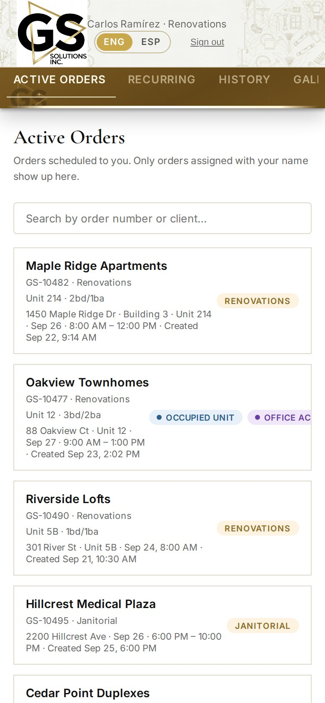
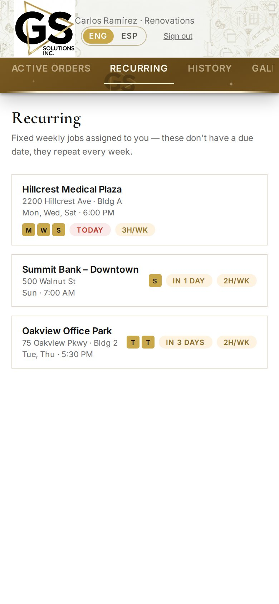
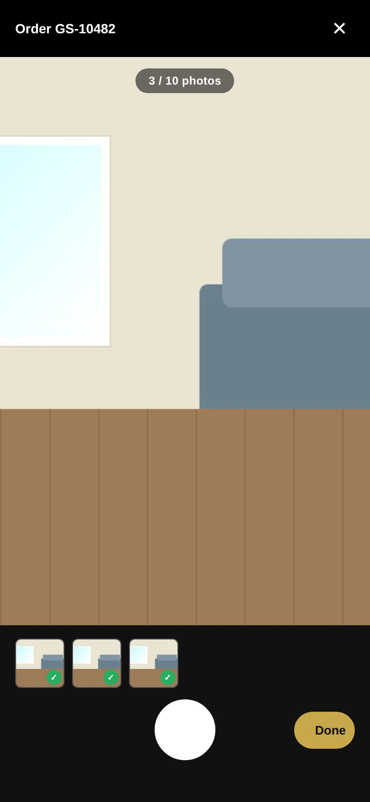
Introducción
GS Tech es la app donde ves el trabajo que te toca, tomas las fotos, marcas lo que terminaste y le avisas a la oficina de cualquier cosa. Funciona en el navegador de tu teléfono y no se descarga de ninguna tienda: la oficina te deja un ícono en la pantalla de inicio y desde ahí entras.
En esta guía vas a aprender, paso a paso:
1 Cómo entrar El QR de la oficina, entrar con tu nombre, crear cuenta, cambiar a español
2 Active Orders Tus órdenes de hoy y de los próximos días, cómo abrirlas y marcarlas como hechas
3 La cámara Fotos de la orden, fotos por servicio, video y qué pasa si no hay señal
4 Recurring Los trabajos fijos que se repiten cada semana
5 History Las órdenes que ya trabajaste, con todo lo que pasó
6 Gallery y Docs Tus fotos por orden y los documentos de cada orden
7 Solo supervisores Update Services, Report: Unit Not Ready, inspecciones y filtros
8 Preguntas frecuentes Qué hacer cuando algo no sale como esperabas
Antes de empezar
Los botones y pantallas de la app están en inglés. En esta guía los escribimos igual que en la app, así, para que los encuentres rápido.
Si prefieres la app en español, toca ESP arriba, junto a tu nombre (te lo explicamos en la sección 1).
Las capturas usan clientes y órdenes de ejemplo. En tu teléfono vas a ver tus órdenes reales.
Las partes que solo aplican a supervisores están marcadas en azul.
1Cómo entrar
Hay dos formas de entrar. La mejor es configurar tu teléfono una sola vez con el código QR que te da la oficina: después, el ícono te lleva directo a tus órdenes. Si no tienes el QR a la mano, puedes entrar con tu nombre y los últimos 4 dígitos de tu teléfono.
1.1 Configurar tu teléfono con el QR (recomendado)
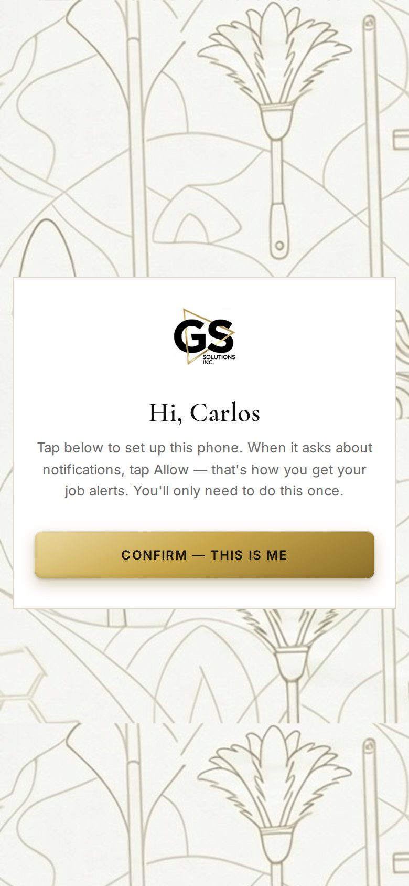
Paso 3. Confirma que eres tú.
Pídele a la oficina tu código QR (lo generan en Admin, en Techs & Roles).
Escanéalo con la cámara de tu teléfono y abre el enlace. Verás Hi, (tu nombre).
Toca Confirm — This Is Me.
Cuando el teléfono pregunte por notificaciones, toca Permitir / Allow. Así te llegan los avisos de tus trabajos (te asignaron, te cambiaron o te quitaron una orden, o se canceló).
Verás You're all set y la app te lleva a tus órdenes.
ImportanteLos avisos solo se pueden activar en este paso. Si dijiste que no, o cambiaste de teléfono, pídele a la oficina un New QR y vuelve a hacerlo.
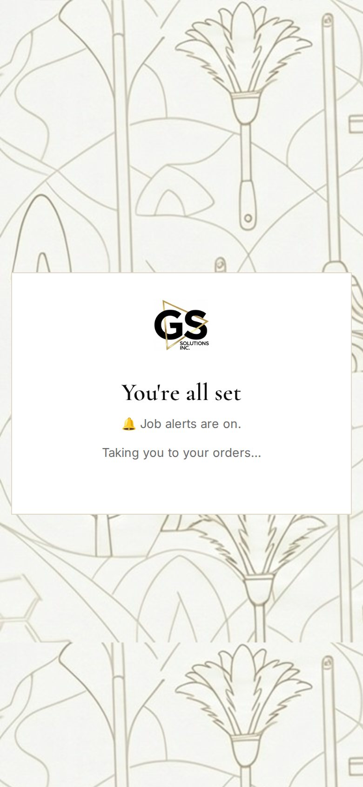
Listo. “Job alerts are on” quiere decir que los avisos quedaron activados.
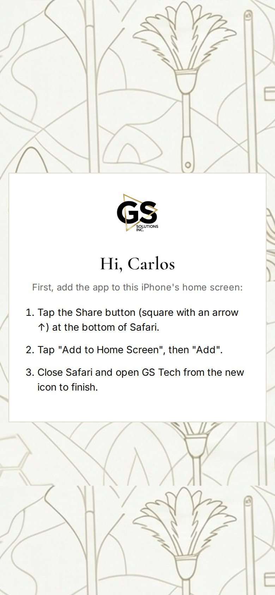
En iPhone primero te pide agregar la app a la pantalla de inicio.
Si tienes iPhoneApple solo manda avisos a apps que están en la pantalla de inicio. Por eso, al abrir el QR en Safari:
Toca el botón Compartir (el cuadro con la flecha ↑) abajo en Safari.
Toca Agregar a pantalla de inicio / Add to Home Screen y luego Agregar / Add.
Cierra Safari y abre GS Tech desde el ícono nuevo. Ahí te aparece Confirm — This Is Me para terminar.
1.2 Entrar con tu nombre y los últimos 4 dígitos
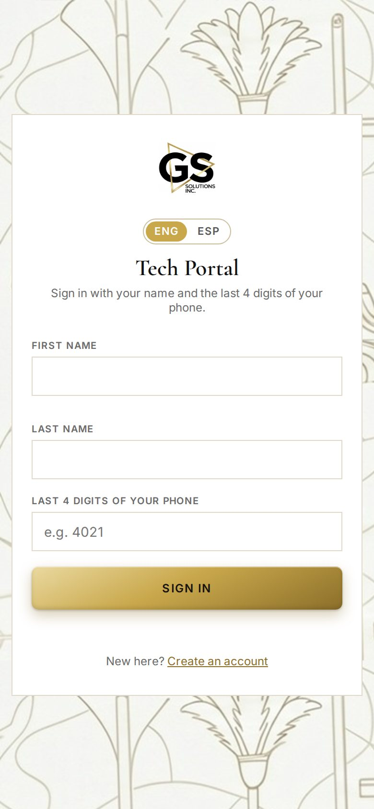
Pantalla para entrar.
Si abres tech.gsocd.com y el teléfono no está configurado, verás la pantalla Tech Portal:
First Name: tu nombre.
Last Name: tu apellido.
Last 4 digits of your phone: los últimos 4 números de tu teléfono (el que tiene registrado la oficina).
Toca Sign In.
La app te recuerda por 30 días en ese teléfono, así que no tienes que escribir tus datos cada vez.
Si sale “We could not find an account…”, revisa que el nombre y los 4 dígitos sean los mismos que tiene la oficina. Si sigue sin entrar, llama a la oficina.
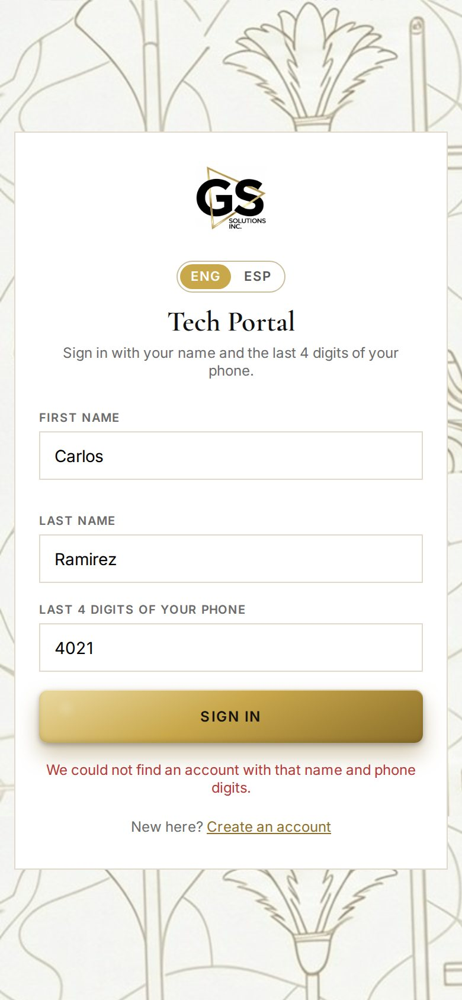
Si los datos no coinciden, sale el aviso en rojo debajo del botón.
1.3 Crear una cuenta nueva
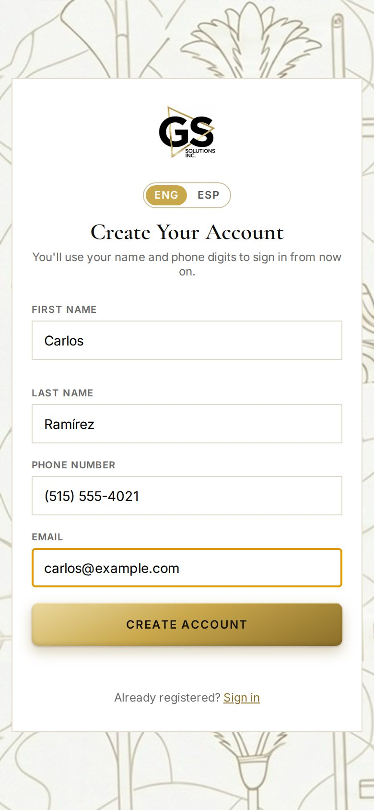
Formulario de cuenta nueva.
Si eres nuevo y la oficina todavía no te dio de alta, toca Create an account en la pantalla de entrada y llena:
First Name y Last Name
Phone Number: tu teléfono completo
Email: tu correo
Toca Create Account. Tu cuenta queda esperando a que la oficina la apruebe. Cuando la aprueben, entra con tu nombre y los últimos 4 dígitos de ese teléfono.
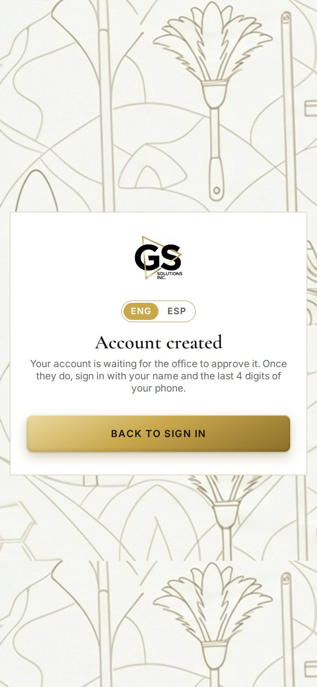
Account created: falta que la oficina la apruebe.
1.4 La parte de arriba de la app
Tu nombre y división · ENG | ESP para cambiar el idioma · Sign out para salir.
Tu nombre y división (por ejemplo, Carlos Ramírez · Renovations). Así sabes con qué cuenta entraste.
ENG / ESP: cambia toda la app entre inglés y español. Se guarda en tu cuenta, así que la próxima vez abre en el idioma que escogiste.
Sign out: cierra tu sesión en ese teléfono. Úsalo solo si le vas a prestar el teléfono a alguien más; si no, no hace falta.
Abajo están las 4 tabs. En teléfonos chicos puedes deslizar la barra hacia un lado para ver Gallery.
Las 4 tabs de un vistazo
Tab
Para qué sirve
Active Orders
Las órdenes que tienes asignadas y que todavía no se cierran. Aquí trabajas casi todo el día.
Recurring
Los trabajos fijos semanales (por ejemplo, limpieza de un edificio lunes, miércoles y sábado). Salen cuando te tocan en los próximos 3 días.
History
Órdenes ya terminadas (Completed) o canceladas (Cancelled), con su historial completo.
Gallery
Las fotos que has tomado, agrupadas por orden, y los documentos (Docs) de tus órdenes.
1.5 La app en español
Toca ESP y la página se vuelve a cargar en español: títulos, botones, avisos, fechas y los nombres de los servicios. Los nombres de clientes y direcciones se quedan igual.
NotaEl resto de esta guía muestra la app en inglés, que es como viene de fábrica. Si usas ESP, los botones están en el mismo lugar, solo cambia el texto.
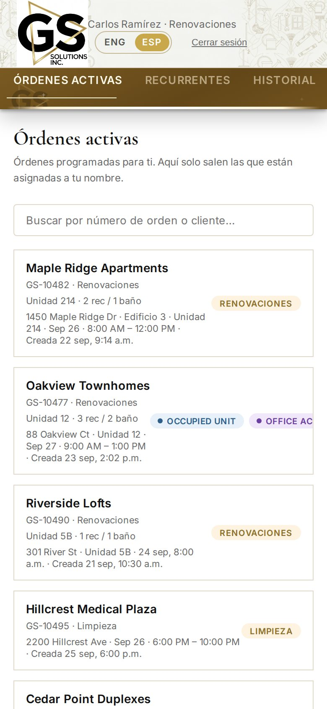
Active Orders en español (Órdenes activas).
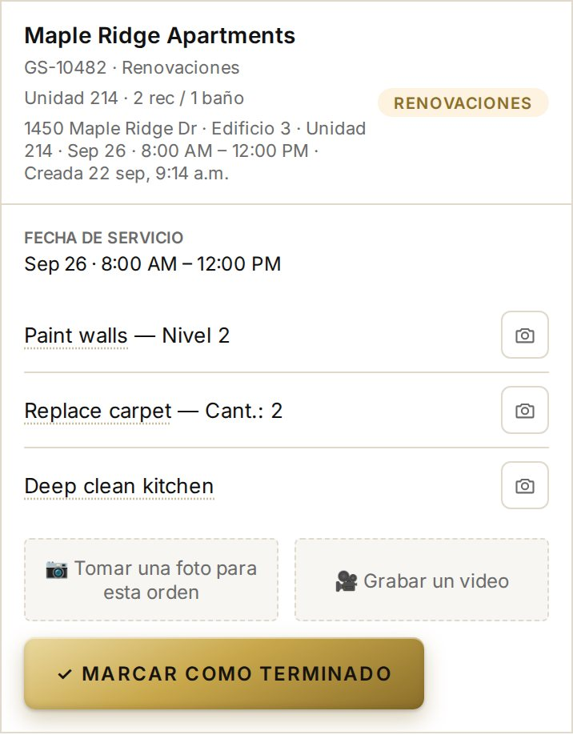
Una orden abierta: Tomar una foto, Grabar un video, Marcar como terminado.
2Active Orders
Es la primera pantalla que ves al entrar. Aquí salen solo las órdenes que la oficina te asignó a ti, desde que te las programan hasta que la oficina las cierra.
2.1 La lista de órdenes
Active Orders con varias órdenes.
Cada tarjeta es una orden. Cerrada, te dice lo más importante:
Nombre del cliente (en negritas).
Número de orden (GS-…) y división (Renovations, Janitorial, Exteriors).
Unidad y recámaras/baños (Unit 214 · 2bd/1ba), si aplica.
Dirección, edificio, el día y horario en que te toca, y cuándo se creó la orden.
A la derecha puede haber etiquetas (badges):
Renovations
La división de la orden.
● Occupied unit
Hay gente viviendo en la unidad. Tócala antes de entrar y sé cuidadoso.
● Office access needed
Necesitas algo de la oficina antes de empezar (llaves, código, permiso). Abre la orden para leer qué.
Toca cualquier tarjeta para abrirla y vuelve a tocar el encabezado para cerrarla.
2.2 Buscar una orden
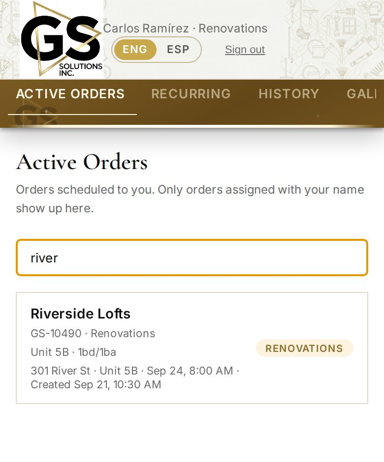
Buscando “river”.
Usa la caja Search by order number or client… arriba de la lista. Escribe parte del número de orden (por ejemplo 10490) o del nombre del cliente (por ejemplo river) y la lista se filtra mientras escribes.
Para ver todo otra vez, borra lo que escribiste.
2.3 Una orden abierta
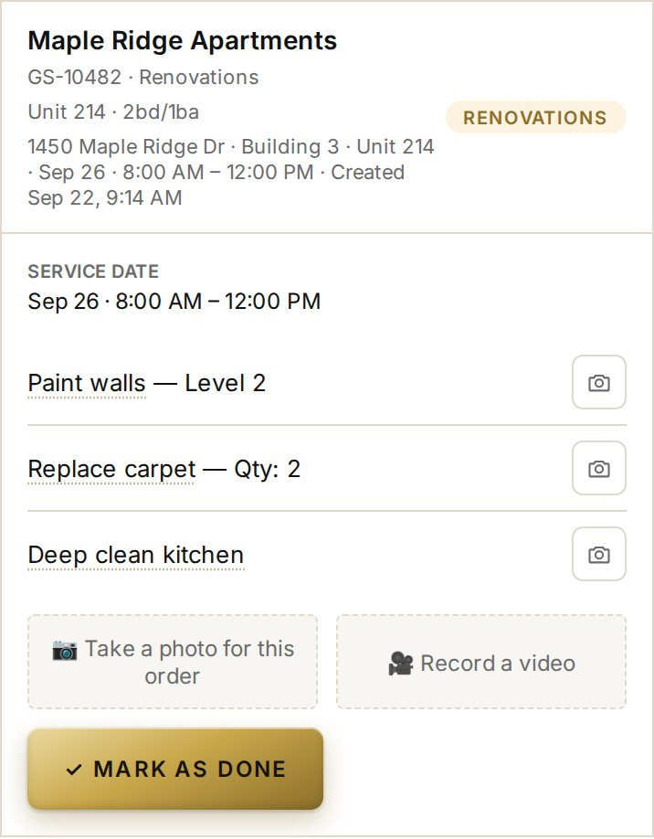
Orden abierta con 3 servicios.
Al abrir una orden ves:
Service Date: el día y horario en que te toca.
La lista de servicios que tienes que hacer, con su nivel (Level 1, 2, 3) o cantidad (Qty: 2). Si un servicio tiene la letra subrayada, tócalo para ver la descripción de lo que incluye.
Una camarita📷 junto a cada servicio, para tomar la foto de ese servicio en específico.
📷 Take a photo for this order: fotos generales de la orden.
🎥 Record a video: graba un video con la cámara normal del teléfono (máximo 5 minutos).
✓ Mark as Done: para avisar que terminaste (ver 2.5).
Todo lo de la cámara lo explicamos en la sección 3.
2.4 Paquetes y avisos de la oficina
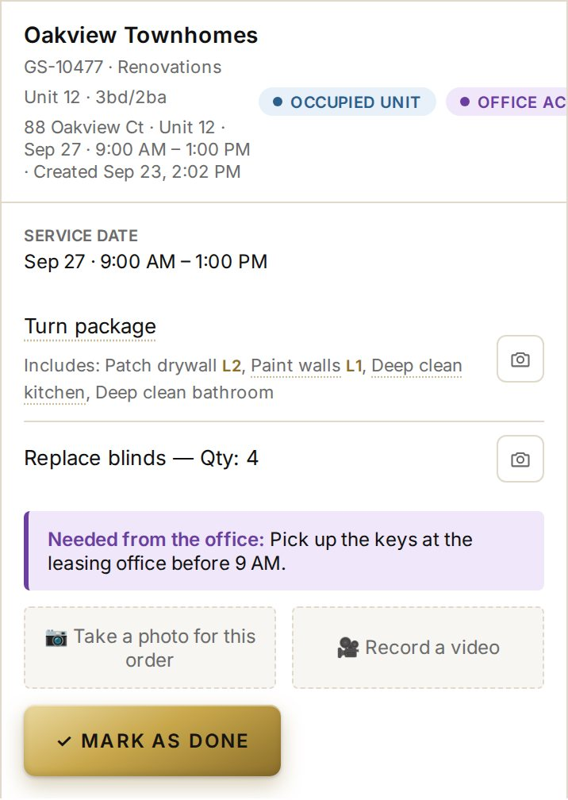
Paquete con su lista y nota de la oficina.
Algunas órdenes traen un paquete (por ejemplo, Turn package). Debajo del paquete dice Includes: y la lista de lo que trae, con su nivel (L1, L2). Es tu checklist: tal como estaba el día que se hizo la orden.
Si la orden necesita algo de la oficina, verás un recuadro morado Needed from the office: con la nota. Por ejemplo: “Pick up the keys at the leasing office before 9 AM.”
2.5 Marcar la orden como terminada
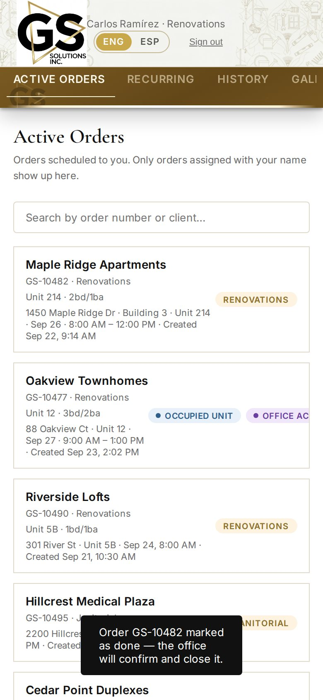
El aviso después de marcarla.
Abre la orden y toca ✓ Mark as Done.
Se abre la cámara. Tienes que tomar al menos 1 foto del trabajo terminado: sin foto, el botón Done no te deja salir.
Toca Done. La app regresa sola a tus órdenes y marca la orden como hecha: no tienes que tocar nada más.
Verás un aviso abajo (“Order … marked as done — the office will confirm and close it”) y, dentro de la orden, el recuadro azul ✓ You marked this as done — waiting for the office to confirm and close it.
La orden se queda en tu lista hasta que la oficina la revise y la cierre. Después se pasa a History.
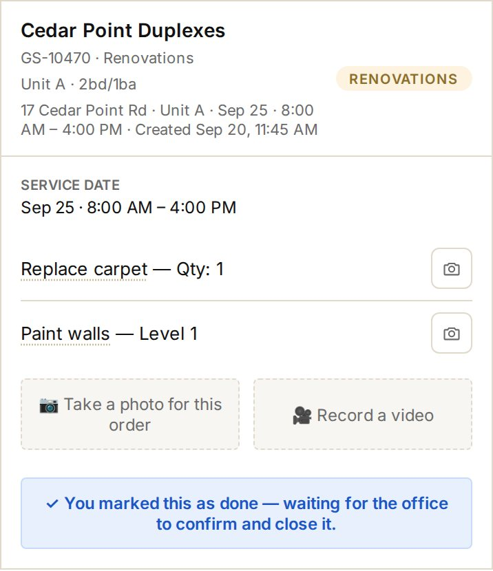
Orden ya marcada: esperando a la oficina.
2.6 Órdenes repartidas por servicio
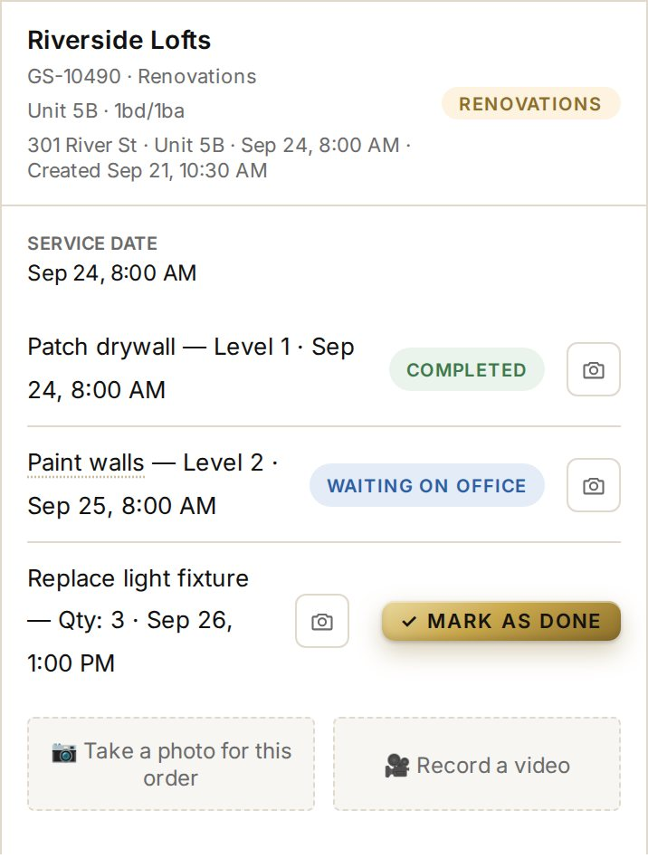
Un servicio completado, uno esperando y uno por hacer.
A veces la oficina reparte una orden entre varias personas o días (Assign by service). En esas órdenes:
Solo ves tus servicios, cada uno con el día y la hora que te tocan.
Cada servicio tiene su propio ✓ Mark as Done (con foto obligatoria, igual que arriba).
Waiting on office = ya lo marcaste y la oficina lo está revisando.
Completed = la oficina ya lo confirmó.
No hay un botón para toda la orden: vas marcando servicio por servicio.
2.7 Órdenes por lugar (limpieza recurrente)
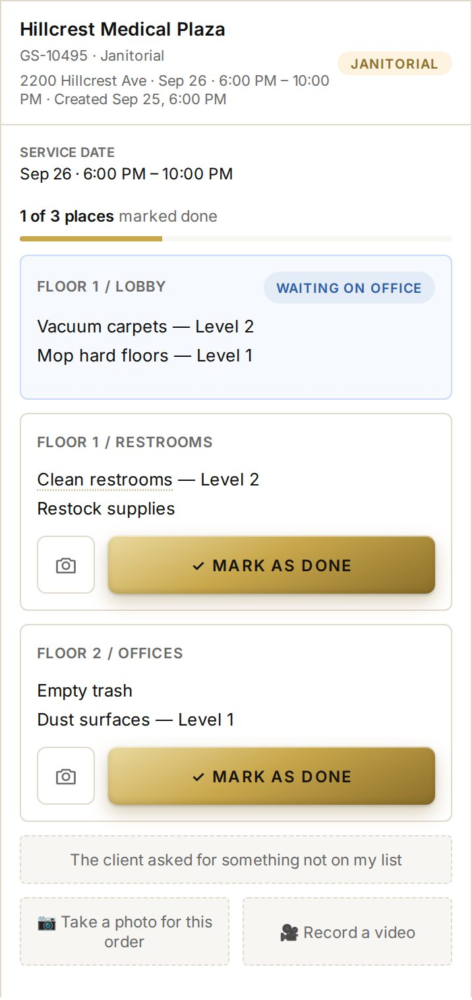
Orden por lugar con 3 lugares.
En los edificios con limpieza fija, la orden del día viene por lugar: Floor 1 / Lobby, Floor 1 / Restrooms, Floor 2 / Offices… Cada lugar trae sus servicios.
Arriba ves el avance: 1 of 3 places marked done y una barrita dorada.
En cada lugar: la camarita para fotos de ese lugar y ✓ Mark as Done para marcar el lugar completo (pide foto).
Los lugares en azul con Waiting on office ya los marcaste.
Cuando el cliente te pide algo que no está en tu lista
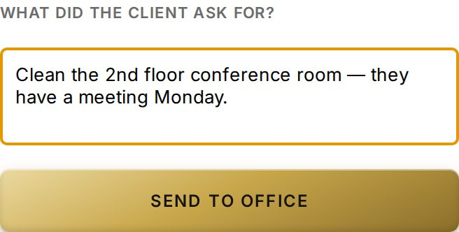
El formulario para avisar a la oficina.
No lo hagas por tu cuenta. Primero avísale a la oficina:
Toca The client asked for something not on my list (abajo de los lugares).
En What did the client ask for? escribe qué te pidió.
Toca Send to office.
Sale el aviso “Sent to the office. Wait for approval before doing it.” La oficina decide si se hace y si se cobra aparte. Espera su respuesta antes de hacerlo.
3La cámara
La app tiene su propia cámara. Si no tienes señal, las fotos se suben solas cuando regrese.
3.1 Cómo tomar fotos
3 fotos tomadas y subidas (✓ verde).
La cámara se abre desde 📷 Take a photo for this order, desde la camarita de un servicio o lugar, o desde ✓ Mark as Done.
Arriba dice para qué es la foto: Order GS-10482 o el nombre del servicio (Paint walls).
El contador (3 / 10 photos) te dice cuántas llevas. Puedes tomar hasta 10 fotos por vez.
Toca el círculo blanco para tomar cada foto. Puedes tomarlas seguidas, una tras otra.
Abajo aparecen las miniaturas. La bolita de cada una te dice cómo va:
↑
Subiendo.
✓
Ya se subió.
⏳
Esperando señal: se sube sola cuando haya.
!
No se pudo subir: tócala para intentar otra vez.
Toca Done para terminar, o la ✕ de arriba para salir.
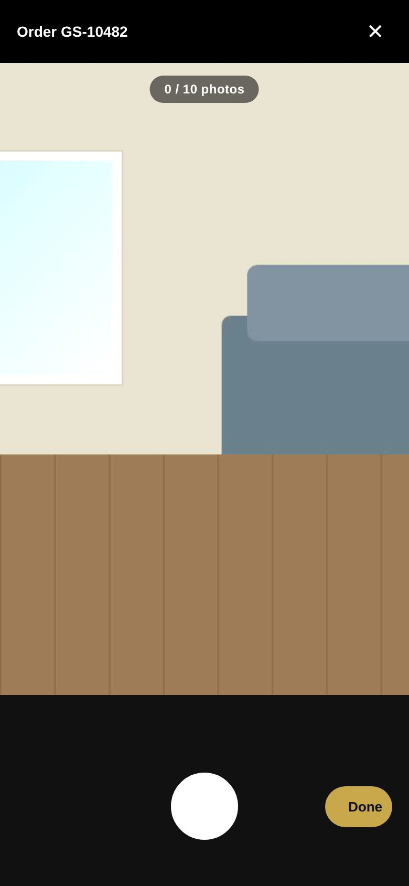
Cámara de la orden, antes de tomar fotos.
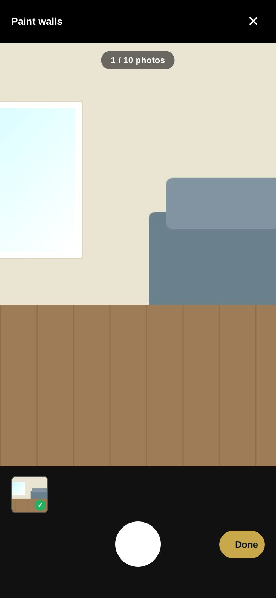
Foto de un servicio: arriba dice Paint walls.
3.2 La foto obligatoria al terminar
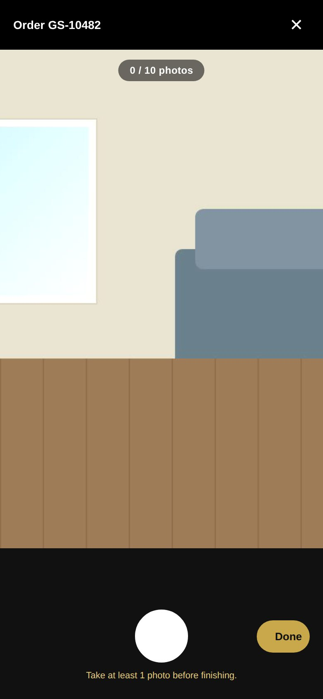
Sin foto no se puede terminar.
Cuando la cámara se abre desde ✓ Mark as Done, tienes que tomar al menos 1 foto. Si tocas Done sin fotos, sale abajo: “Take at least 1 photo before finishing.”
Toma la foto del trabajo ya terminado y vuelve a tocar Done.
3.3 Sin señal
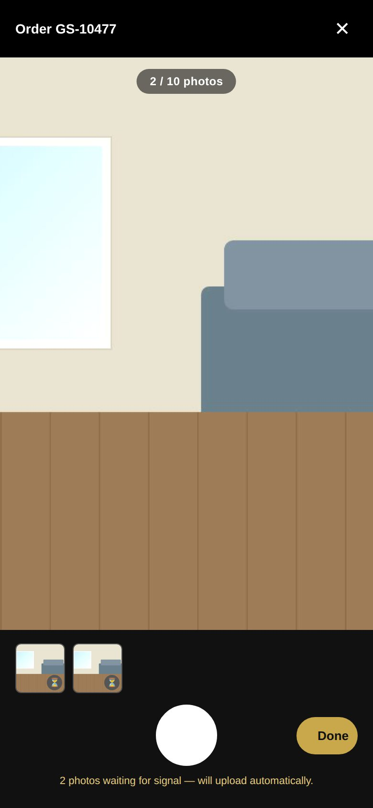
Fotos esperando señal (⏳).
Si estás en un sótano o en un lugar sin señal, sigue tomando fotos normal. Verás “2 photos waiting for signal — will upload automatically.”
La app las sube sola en cuanto regrese la señal, aunque cierres la cámara o la app. Mientras tanto, arriba de tus órdenes aparece una barra café con cuántas faltan.
Si una foto no se pudo subir después de varios intentos, la barra dice “… could not be uploaded — open the order and try again.” Abre la orden y vuelve a intentar.
NotaSi algo se queda guardado en tu teléfono, lo puedes borrar sin problema: no afecta la app.
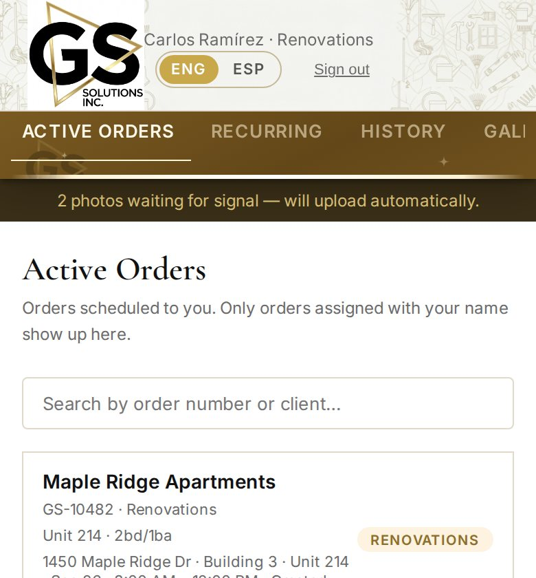
La barra arriba de Active Orders mientras hay fotos pendientes.
3.4 Video
🎥 Record a video abre la cámara normal de tu teléfono (no la de la app). Graba y acepta el video. Aparece una miniatura en la orden y el aviso “Video saved to this order.”
Máximo 5 minutos por video. Si es más largo, la app te pide grabar uno más corto.
El video necesita señal para subirse: si no tienes, mejor toma fotos y graba el video cuando haya señal.
4Recurring
Los trabajos fijos que se repiten cada semana, como la limpieza de oficinas. No tienen fecha de entrega: se repiten los mismos días cada semana.
4.1 La lista
Tres trabajos recurrentes.
Solo salen los trabajos que te tocan en los próximos 3 días. Cada tarjeta dice:
Cliente, dirección y edificio.
Los días y la hora (Mon, Wed, Sat · 6:00 PM), también como cuadritos dorados (M W S).
Cuándo te toca: Today (hoy), In 1 day, In 3 days…
Las horas asignadas por semana (3h/wk).
4.2 Marcar la visita de hoy
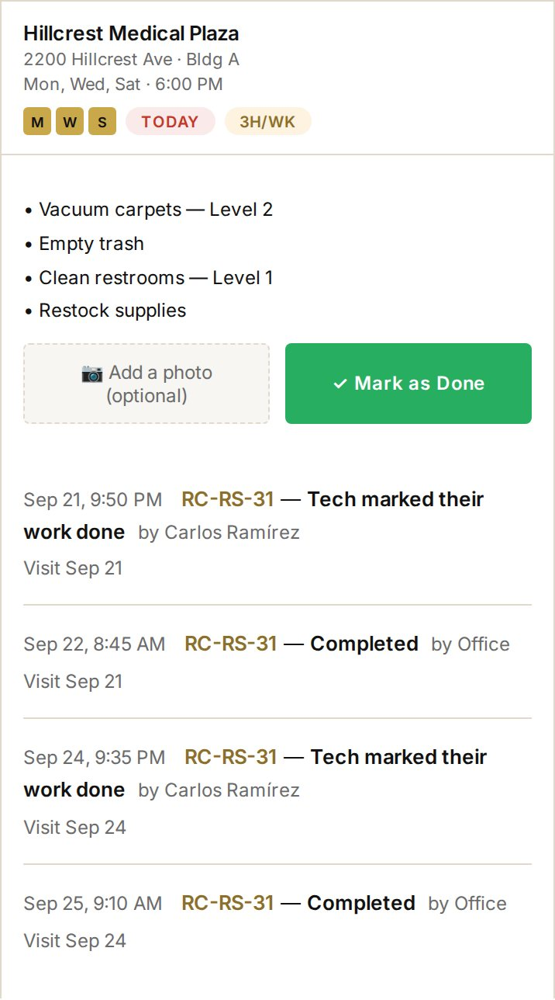
Visita de hoy, con su historial.
Abre la tarjeta que dice Today. Verás la lista de servicios y dos botones:
📷 Add a photo (optional): fotos de la visita. Aquí la foto es opcional.
✓ Mark as Done: avisa que terminaste la visita de hoy.
Después verás “✓ Marked done — waiting for the office to confirm and close it.”
Debajo está el historial de visitas anteriores: quién la marcó y cuándo la cerró la oficina.
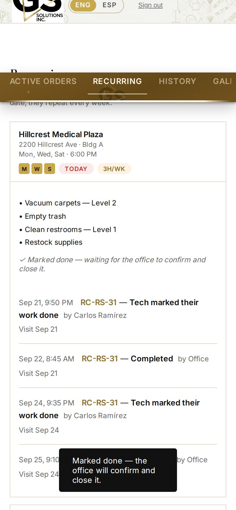
Visita marcada: esperando a la oficina.
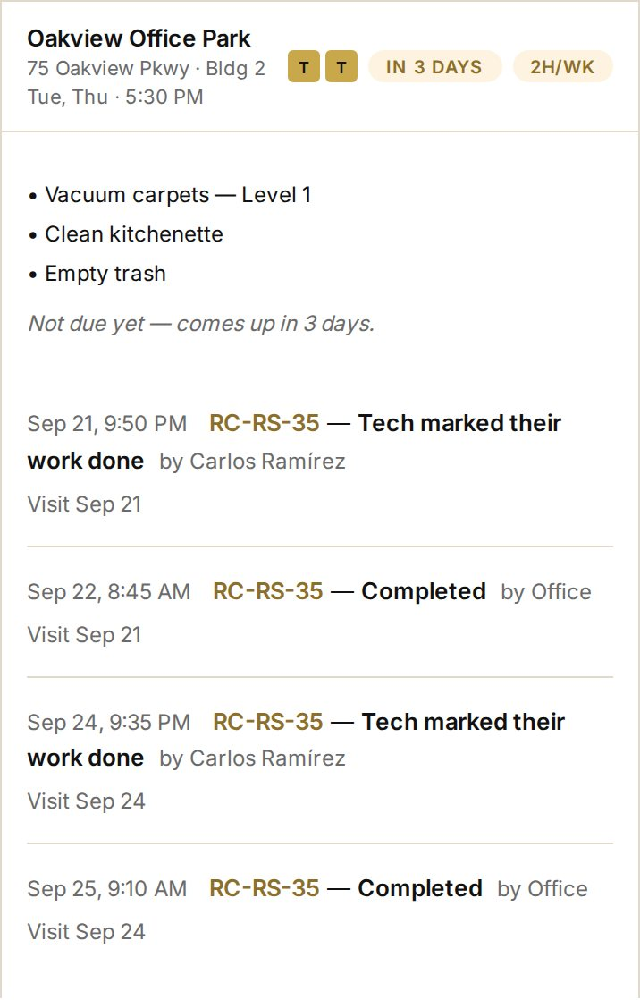
Si todavía no toca: Not due yet — comes up in 3 days.
5History
Las órdenes en las que trabajaste y que ya se cerraron: terminadas (Completed) o canceladas (Cancelled).
Cada tarjeta dice el cliente, el número de orden, la unidad, quién fue el supervisor y la fecha en que se completó. La etiqueta de la derecha dice cómo terminó.
Al abrirla ves:
Detalles: dirección, Entry (fecha de entrada), Due (fecha límite), supervisor, recámaras/baños, horario y contacto.
Servicios. Si alguno no se hizo, dice not completed y por qué.
Notas de la orden.
El historial completo: cuándo se creó, cuándo se asignó, cuándo la marcaste como hecha y cuándo la cerró la oficina. Toca ▾ details para ver más de cada paso.
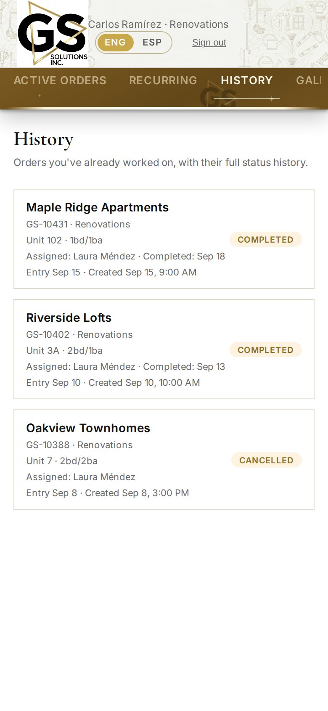
Tres órdenes cerradas.
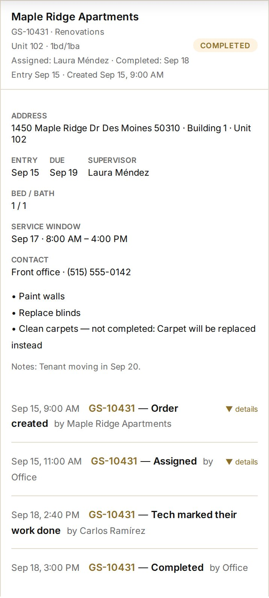
Una orden abierta, con detalles e historial.
6Gallery y Docs
Dentro de la tab Gallery hay dos secciones: Gallery (tus fotos) y Docs (documentos de tus órdenes).
6.1 Fotos (Gallery)
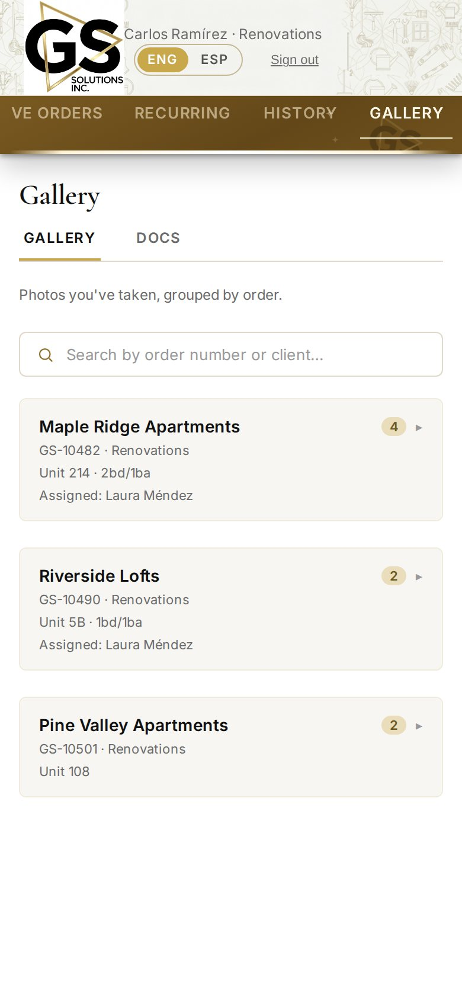
Grupos de fotos por orden.
Tus fotos están agrupadas por orden. Cada grupo dice el cliente, la orden, la unidad y cuántas fotos tiene (el numerito dorado).
Toca un grupo para abrirlo.
Arriba sale la foto más reciente en grande, con el servicio y la hora.
Abajo están las demás miniaturas y la lista de servicios de la orden.
Toca cualquier foto para verla en pantalla completa. Usa las flechas de los lados para pasar a la siguiente y toca la ✕ para cerrar.
Usa Search by order number or client… para encontrar una orden rápido.
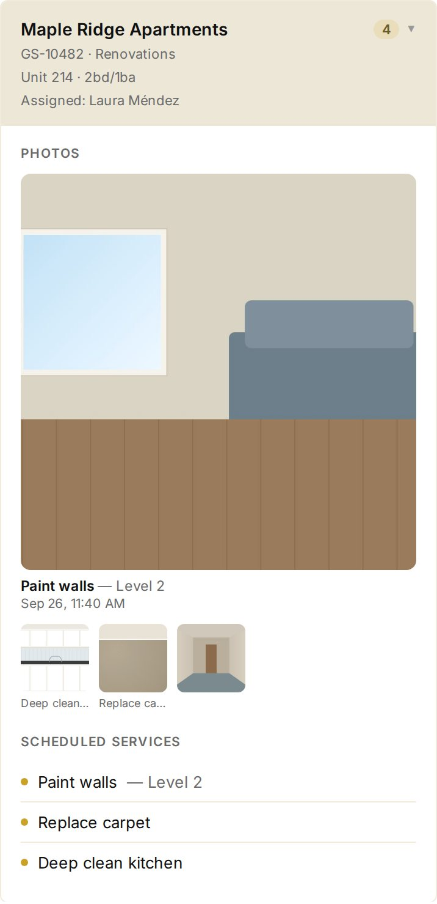
Un grupo abierto.
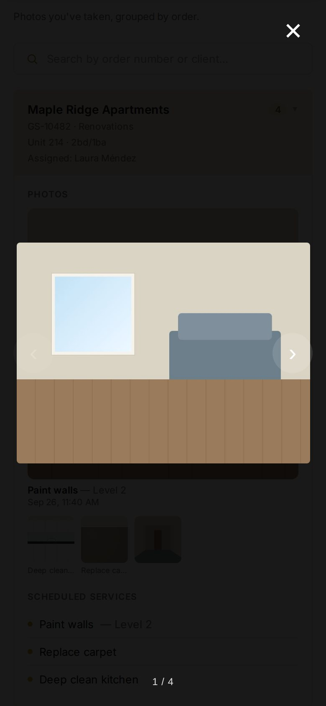
Foto en pantalla completa.
En órdenes con inspección, las fotos se separan en Inspection · before (lo que encontró el supervisor antes del trabajo) y Work · after (el trabajo terminado).
6.2 Documentos (Docs)
Toca Docs. Aquí están los documentos que la oficina o el cliente subieron a tus órdenes: PDF, Word o texto. Por ejemplo, el alcance del trabajo (scope of work), colores de pintura o instrucciones para entrar.
Toca la orden para ver sus documentos. Cada uno dice quién lo subió, la fecha y el tamaño.
Toca el nombre del documento para abrirlo.
Arriba tienes Download para descargarlo y Close para cerrarlo.
Los técnicos solo pueden ver documentos, no subirlos ni borrarlos.
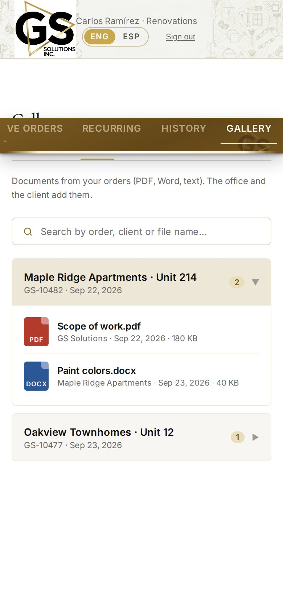
Documentos de una orden.
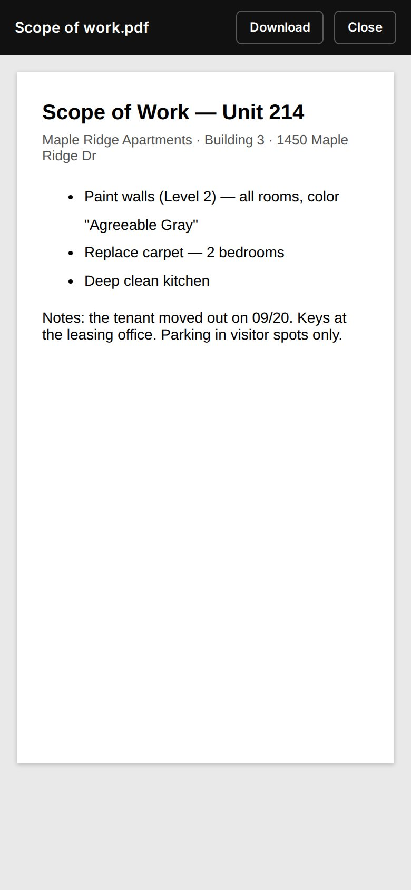
Documento abierto.
7Solo supervisores
Los supervisores usan las mismas 4 tabs, pero ven todo su departamento y tienen herramientas extra para reportar cambios a la oficina.
Lo que cambia para un supervisor
Active Orders, Recurring, History y Gallery muestran las órdenes de toda tu división, no solo las tuyas.
Solo puedes marcar como hechas (✓ Mark as Done) las órdenes donde tú eres el supervisor asignado. En las demás, ese botón no sale.
Tienes Update Services, Report: Unit Not Ready e inspecciones.
7.1 Active Orders del departamento y filtros
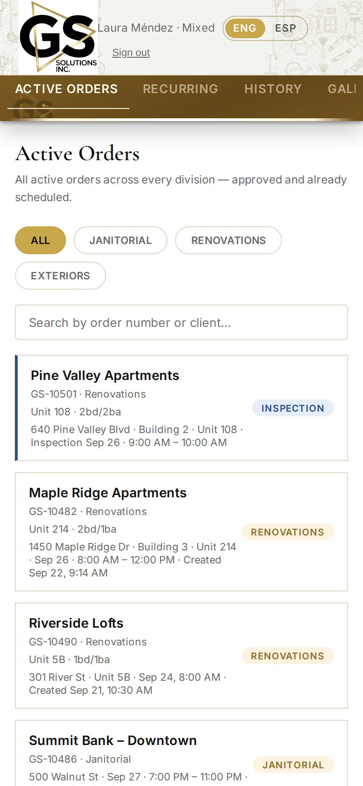
Vista del supervisor con filtros por división.
Si tu división es Mixed (ves varias divisiones), arriba salen los filtros All, Janitorial, Renovations y Exteriors. Toca uno para ver solo esa división y All para ver todo.
Las órdenes en inspección siempre salen primero, con una raya azul a la izquierda y la etiqueta Inspection.
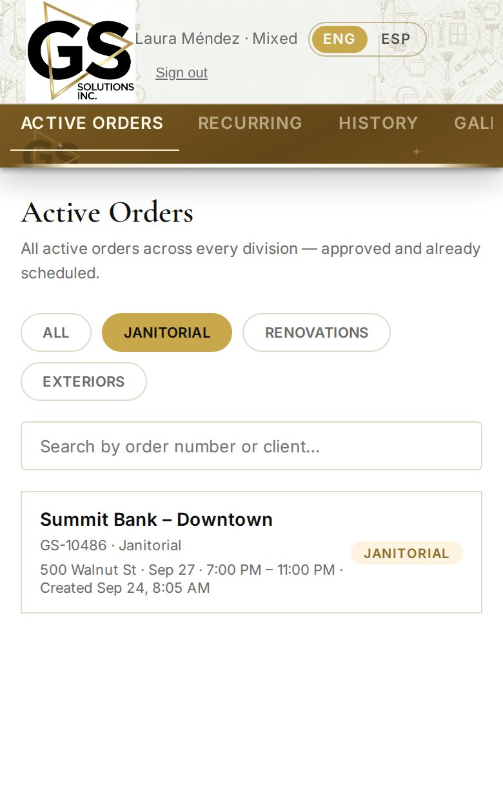
Filtrando solo Janitorial.
7.2 Una orden abierta (supervisor)
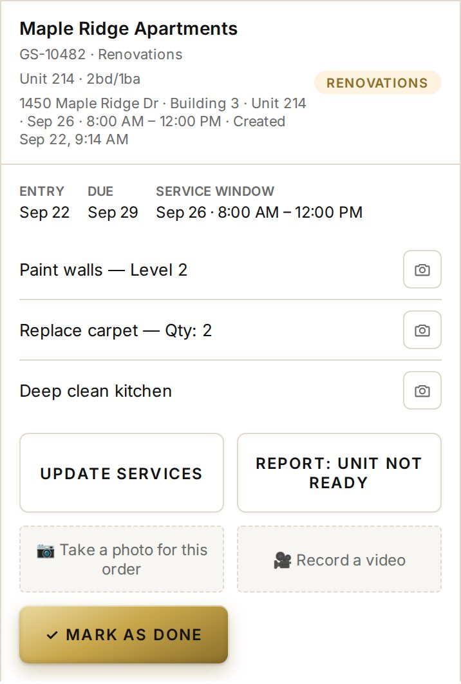
Orden del supervisor, con sus botones.
Además de lo que ve un empleado, el supervisor tiene:
Entry, Due y Service Window de la orden.
Update Services: reportar que un servicio no se hizo, cambiar nivel o cantidad, o agregar uno que hacía falta (7.3).
Report: Unit Not Ready: avisar que la unidad no está lista para trabajar (7.4).
✓ Mark as Done: solo en las órdenes que son tuyas.
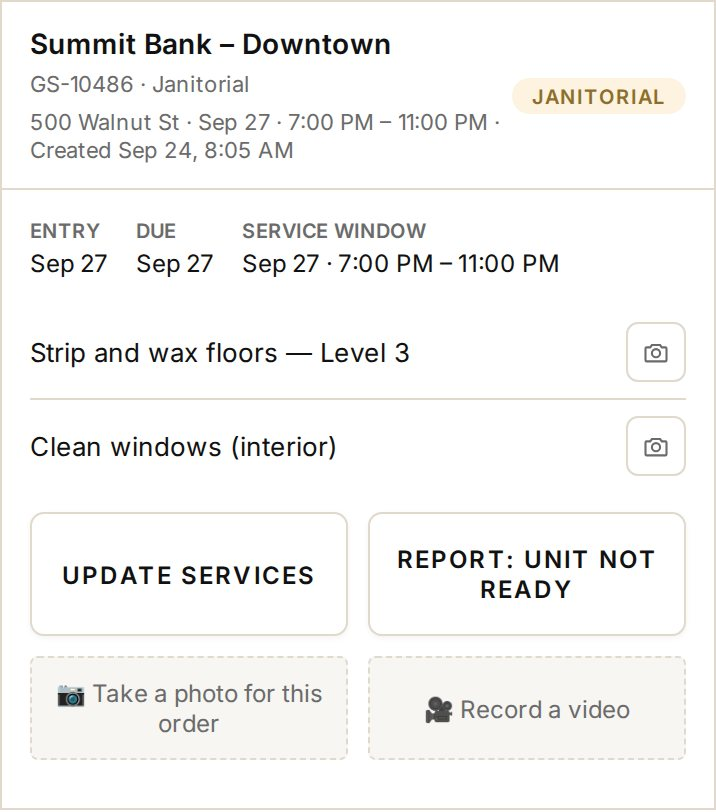
Orden de otro supervisor: sin Mark as Done.
7.3 Update Services
Sirve para decirle a la oficina que lo que se hizo (o lo que hace falta) es distinto a lo que dice la orden. Nada se cambia directo: se manda a la oficina para revisión, y el cliente no ve nada hasta que GS Solutions se lo mande.
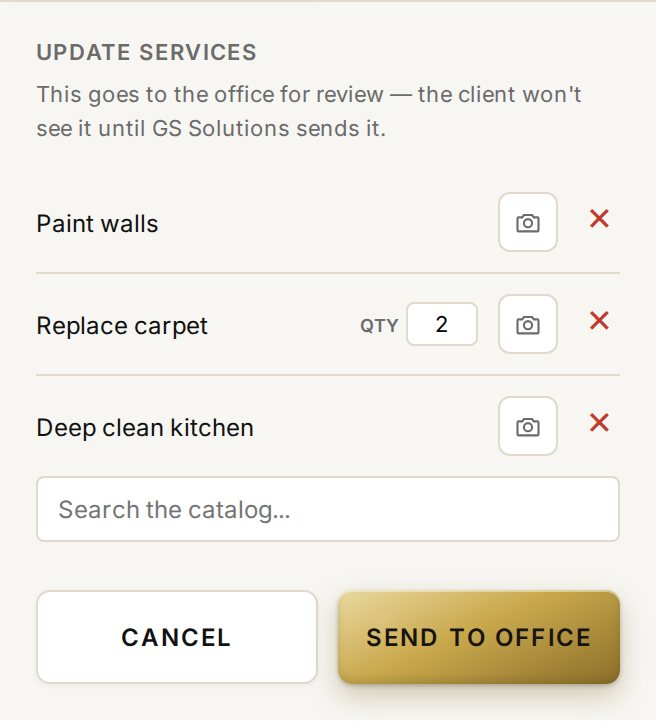
El panel Update Services.
Abre la orden y toca Update Services. Se abre el panel debajo.
Por cada servicio puedes:
Cambiar el nivel con L1L2L3 (en Janitorial).
Corregir la cantidad en Qty (por ejemplo, eran 3 puertas y resultaron 5).
Tomar una foto con la camarita.
Quitarlo con la ✕ roja.
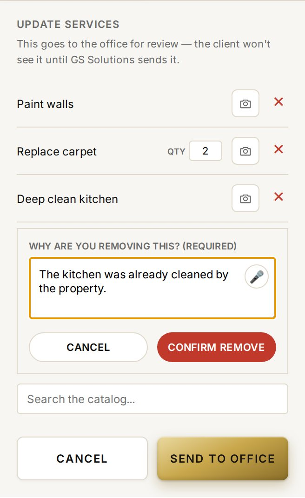
Nota obligatoria para quitar un servicio.
Quitar un servicio
Al tocar la ✕ te pide Why are you removing this? (required). La nota es obligatoria. Puedes escribirla o tocar el micrófono 🎤 y dictarla (en iPhone usa el micrófono del teclado). Luego toca Confirm Remove.
El servicio queda tachado con la razón debajo. Si te equivocaste, toca Undo.
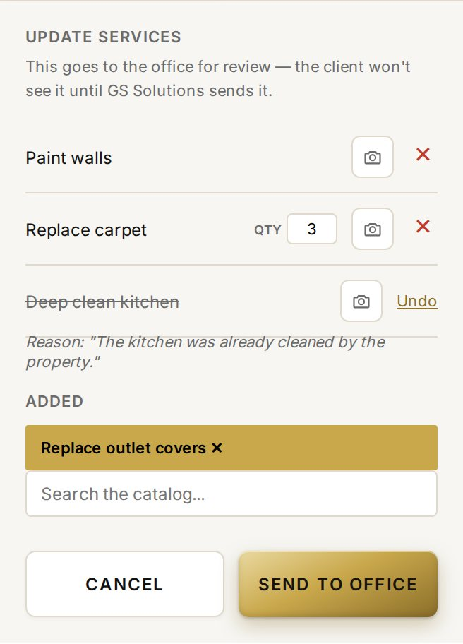
Servicio quitado, cantidad corregida y servicio agregado, listo para mandar.
Agregar un servicio que hacía falta
Escribe en Search the catalog... (por ejemplo outlet) y toca el servicio. Queda en Added; si te equivocaste, tócalo otra vez para quitarlo.
Mandar
Revisa todo y toca Send to Office. Sale “Sent to the office for review.” La oficina lo revisa y decide. Con Cancel cierras el panel sin mandar nada.
TipSi sales a tomar una foto a mitad de los cambios, no se pierden: al regresar, el panel se abre como lo dejaste.
7.4 Report: Unit Not Ready
Úsalo cuando llegas y la unidad no se puede trabajar (sigue ocupada, no hay luz, hay cosas del inquilino…):
Abre la orden y toca Report: Unit Not Ready.
El teléfono te pregunta “Why is the unit not ready?”. Escribe una nota corta explicando por qué (es obligatoria).
Toca OK. Sale “Reported. Our office will review it.” La oficina decide la nueva fecha: tú no tienes que proponerla.
7.5 Inspecciones
Cuando la oficina manda una orden a inspección, vas a ver el lugar antes de que se programe el trabajo. Terminar la inspección no completa la orden: la oficina la revisa y después la programa.
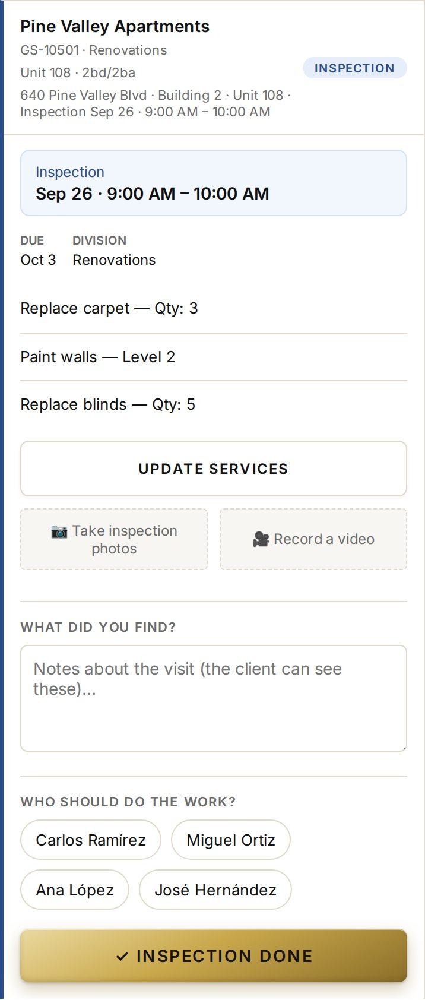
Tarjeta de inspección.
En la tarjeta de inspección tienes:
El recuadro azul Inspection con el día y el horario de la visita.
Los servicios que pidió el cliente.
Update Services: proponer cambios a los servicios (igual que en 7.3).
📷 Take inspection photos y 🎥 Record a video: estas fotos se guardan como Inspection · before.
What did you find?: notas de lo que encontraste. El cliente puede ver estas notas, así que escríbelas claras y profesionales.
Who should do the work?: toca los nombres de las personas que propones para el trabajo (se marcan en azul).
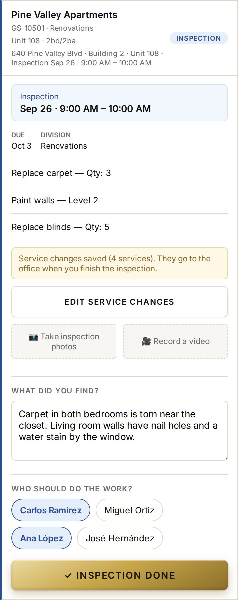
Notas escritas, 2 personas escogidas y cambios guardados.
Si cambias servicios, en Update Services el botón dice Save changes: los cambios se guardan en la inspección y se mandan todos juntos al final. Verás el aviso amarillo “Service changes saved…”.
Cuando termines, toca ✓ Inspection done y confirma. Sale “Inspection sent to the office.”
7.6 Órdenes repartidas por persona
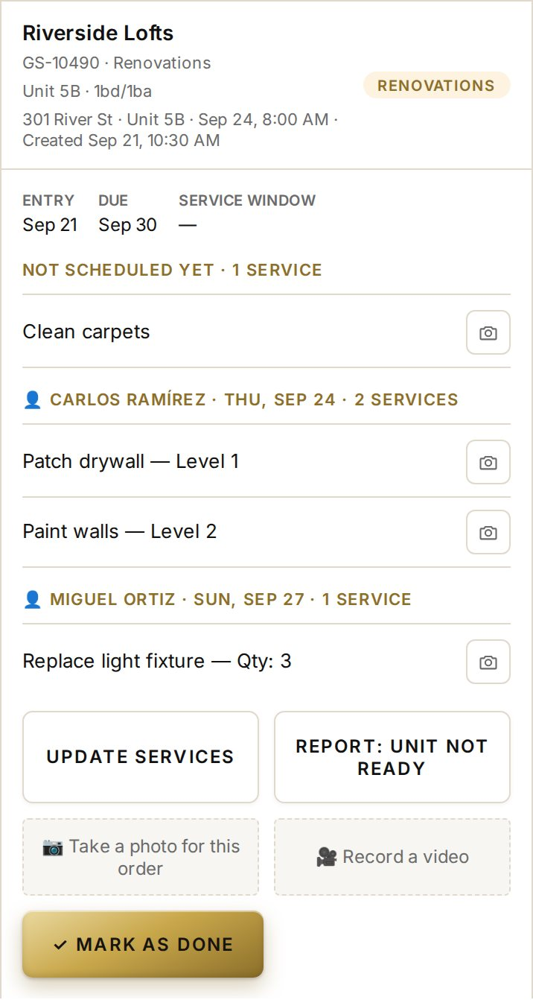
Servicios agrupados por persona.
En las órdenes Assign by service, el supervisor ve todos los servicios agrupados por persona y día:
👤 Carlos Ramírez · Thu, Sep 24 · 2 services
👤 Miguel Ortiz · Sun, Sep 27 · 1 service
Not scheduled yet: servicios que la oficina todavía no programa.
Así sabes quién hace qué y cuándo.
7.7 Recurring del supervisor
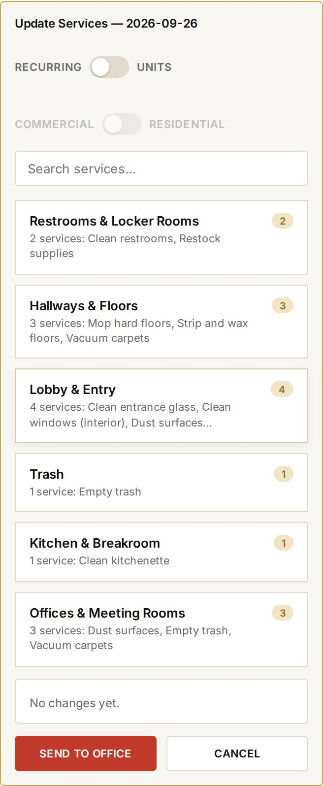
Update Services de un trabajo recurrente.
El supervisor ve todos los trabajos recurrentes de su departamento (no solo los de los próximos 3 días), con las horas totales por semana.
En la visita de hoy, además de 📷 Add a photo (optional) y ✓ Mark as Done, tiene Update Services, para reportar que en esta visita se hizo algo diferente:
Toca Update Services. Se abre el panel con los servicios por área (Restrooms & Locker Rooms, Hallways & Floors, Lobby & Entry…).
Toca un área para abrirla y escoge los servicios y su nivel (L1L2L3), o busca en Search services….
Abajo se ve el resumen: en verde + lo agregado y en rojo − lo que se quitó. Por cada servicio quitado te pide por qué no se hizo (obligatorio).
Toca Send to Office. La oficina lo revisa: nunca se cambia solo.
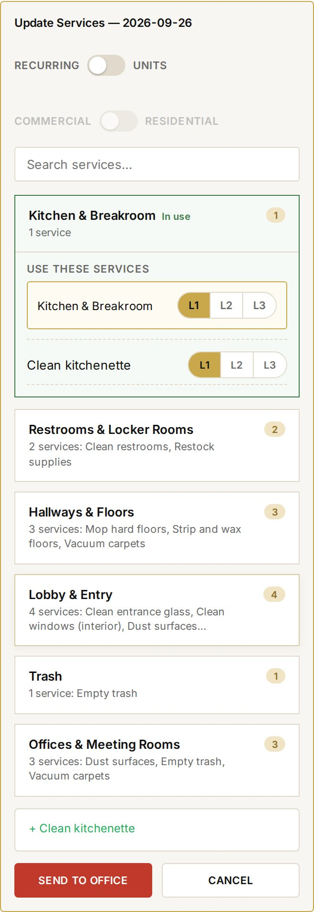
Se agregó Clean kitchenette (+ en verde, abajo).
7.8 History y Gallery del supervisor
Funcionan igual que para un empleado (secciones 5 y 6), pero muestran las órdenes y fotos de todo tu departamento. En History, al abrir una orden ves directo su historial completo.
8Preguntas frecuentes
Si algo no sale como esperabas, revisa aquí antes de llamar a la oficina.
No veo una orden que me dijeron que era mía
En Active Orders solo salen las órdenes asignadas con tu nombre. Revisa que no la tengas filtrada en la búsqueda (borra lo que escribiste). Si sigue sin salir, pídele a la oficina que revise a quién está asignada.
Entro y me regresa a la pantalla de entrada
Tu sesión venció o la oficina desactivó ese teléfono. Entra con tu nombre y tus 4 dígitos, o pide un New QR. Si pasa una y otra vez, pídele a la oficina que revise en Techs & Roles qué rol tienes.
No me llegan los avisos (notificaciones)
Los avisos se activan solo al configurar el teléfono con el QR (sección 1.1). Pide un New QR y, cuando pregunte, toca Permitir.
En iPhone, la app tiene que estar en la pantalla de inicio y debes abrirla desde ese ícono.
Revisa en los ajustes del teléfono que las notificaciones de GS Tech (o del navegador) estén activadas.
Tomé fotos sin señal, ¿se perdieron?
No. Se suben solas cuando regresa la señal (sección 3.3). La barra café arriba de tus órdenes te dice cuántas faltan.
La cámara sale en negro o dice “Could not open the camera”
Le negaste el permiso de cámara a la app. Ve a los ajustes del teléfono, busca el navegador (o GS Tech) y activa la Cámara. Luego vuelve a abrir la app.
Marqué una orden como hecha por error
Llama a la oficina. Ellos la revisan antes de cerrarla, así que la pueden regresar.
El cliente me pide algo extra
No lo hagas sin permiso. En órdenes por lugar, usa The client asked for something not on my list (sección 2.7). En cualquier otra orden, avísale a tu supervisor o a la oficina.
Quiero la app en español / en inglés
Toca ESP o ENG arriba, junto a tu nombre. Se queda guardado en tu cuenta.
¿Dudas?Si algo no está en esta guía o la app hace algo raro, toma una captura de pantalla y mándasela a la oficina con el número de orden. Así lo pueden revisar más rápido.